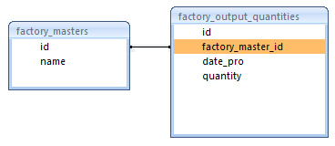

Using FusionCharts with RoR > Plotting data from a database
In this section, we'll show you how to use FusionCharts and Ruby to plot charts from data contained in a database. We'll create a pie chart to show "Production by Factory" using:
- dataXML method first.
- Thereafter, we'll convert this chart to use dataURL method.
For the sake of ease, we'll use the MySQL Database. You can, however, use any database with FusionCharts including SQLLite, MS SQL, Oracle, Access etc. Database configuration will be available here Download Package >> RoR >> SampleApp >> config >> database.yml. In the production version, we have used database named as factorydb.
Before you go further with this page, we recommend you to please see the previous section "Basic Examples" as we start off from concepts explained in that page.
All code discussed here is present in
Controller : Download Package > Code > RoR > SampleApp > app > controllers > fusioncharts > db_example_controller.rb.
Views : Download Package > Code > RoR > SampleApp > app > views > fusioncharts > db_example folder.
Database Structure
Let's quickly have a look at the database structure.

The basic database contains just 2 tables:
- factory_masters: To store the name and id of each factory
- factory_output_quantities: To store the number of units produced by each factory for a given date.
Note that the name of the table is pluralized, as per Ruby conventions. For demonstration, we've fed some sample data in the database. For UTF8Examples, instead of the factory_masters table, we will use japanese_factory_masters table or french_factory_masters table based on the language.
Database Configuration
- All the database configuration is present in the file app > config > database.yml. Here we need to specify the database name, user name and password to access the database. We have used the MySQL database for our examples. We assume that you have created the database with the name factorydb, either by using the rake db:create utility or by using MySQL create database command.
- Once this is done, we need to create the required tables. The required sql script "create_tables.sql" is present in the Download Package > Code > RoR > SampleApp > db folder. You could run this script in your mysql and create the tables and insert the sample data. The other way of creating these tables, is to run rake db:migrate for the migration scripts "001_create_factory_masters.rb" and "002_create_factory_output_quantities.rb" present in the folder Download Package > Code > RoR > SampleApp > db > migrate. Note that these scripts will not create foreign key relationships. You would have to manually alter the table to create these relationships, if you think necessary. To insert the sample data please run the sql script "insert_sample_data.sql" present in the Download Package > Code > RoR >db folder.
- Once this is done, we need to create the tables required for the UTF8 examples. The required sql script "create_utfexample_tables_data.sql" is present in the Download Package > Code > RoR >db folder. You could run this script in your mysql - this will alter the database to use UTF8 as default character set, create the japanese_factory_masters and french_factory_masters tables and insert sample data.
Let's now shift our attention to the code that will interact with the database, fetch data and then render a chart.
Database Example Using dataXML method
Controller: Fusioncharts::DbExampleController
Action: basic_dbexample
#There are two examples in this controller.
#*Pie-chart for total output quantities of each factory by getting data from database and using dataXML method
#*Pie-chart for total output quantities of each factory and a link to another chart
#which gives detailed information for selected factory
#All the views related to this controller will use the "common" layout.
#As per Ruby On Rails conventions, we have the corresponding views
#with the same name as the function name in the controller.
class Fusioncharts::DbExampleController < ApplicationController
#This is the layout which all functions in this controller make use of.
layout "common"
#This action retrieves the values from the database and constructs an array
#to hold, factory name and corresponding total output quantity.
#The view for this action basic_dbexample will use the array values to construct the
#xml for this chart. To build the xml, the view takes help from the builder file #(basic_factories_quantity.builder)
def basic_dbexample
headers["content-type"]="text/html";
@factory_data = []
#Get data from factory masters table
factory_masters = FactoryMaster.find(:all)
factory_masters.each do |factory_master|
total = 0.0
factory_id = factory_master.id
factory_name = factory_master.name
factory_master.factory_output_quantities.each do |factory_output|
total = total + factory_output.quantity
end
# Push the hash of values into the array
@factory_data<<{:factory_name=>factory_name,:factory_output=>total}
end
end
View:
<% @page_title="FusionCharts Free - Database Example" %>
<% @page_heading="Database Example" %>
<% @page_subheading="" %>
<%
#In this example, we show how to connect FusionCharts to a database.
#For the sake of ease, we've used a database which contains two tables, which are linked to each
#other.
# The xml is obtained as a string from builder template.
str_xml = render "fusioncharts/db_example/basic_factories_quantity",{:factory_data => @factory_data}
#Create the chart - Pie 3D Chart with data from strXML
render_chart '/FusionCharts/FCF_Pie3D.swf', '', str_xml, 'FactorySum', 650, 450, false, false do-%>
<% end-%>
Now, here we need to understand some lines of code.
- The basic_dbexample action of the controller, first performs a find on FactoryMaster model, getting all the values.
- For each factory in the record set obtained in the previous step, we sum up the total output quantity for that factory. This is done by iterating through the factory_output_quantities of each factory_master. Note that FactoryMaster and FactoryOutputQuantity are related to each other as shown:
#Model class to store data of factory id and name
#As per Ruby On Rails conventions, we have the corresponding table
#factory_masters in the database
class Fusioncharts::FactoryMaster < ActiveRecord::Base
has_many :factory_output_quantities,
:order => 'date_pro asc'
end
#Model class to store output data of factories
#As per Ruby On Rails conventions, we have the corresponding table
#factory_output_quantities in the database
class Fusioncharts::FactoryOutputQuantity < ActiveRecord::Base
belongs_to :factory_master
end
Based on this relation, Ruby On Rails is able to get the data for FactoryOutputQuantity when a find is performed on FactoryMaster.
- An array @factory_data is used to store the values. Each element of this array contains a hash with factory_name and factory_output. The total obtained for this factory in the previous step is used as value for the factory_output element.
- The view basic_dbexample.html.erb passes the @factory_data array created in the previous step to the builder file "basic_factories_quantity", as parameter. The xml obtained is assigned to str_xml variable.
- Finally, render_chart function is called by setting the str_xml as xml parameter.
Let us now take a look at the builder file.
Builder - basic_factories_quantity.builder
#Creates xml with values for Factory Output
#along with their names.
#The values required for building the xml is obtained as parameter factory_data
#It expects an array in which each element as
#a hash with values for "factory_name" and "factory_output"
xml = Builder::XmlMarkup.new
xml.graph(:caption=>'Factory Output report', :subCaption=>'By Quantity', :pieSliceDepth=>'30',:showNames=>'1', :decimalPrecision=>'0', :formatNumberScale=>'0', :numberSuffix=>' Units') do
for item in factory_data
xml.set(:name=>item[:factory_name],:value=>item[:factory_output])
end
end
The builder builds chart element with several attributes, then iterates through the factory_data array (received as parameter from the view) to create the <set> element with value for label as factory name and value for value attribute as total factory output.
When you now run the code, you'll see a beautiful pie chart as under:

Converting the example to use dataURL method
Let's now convert this example to use dataURL method.
The code for this example is present in
Controller : Download Package > Code > RoR > SampleApp > app > controllers > fusioncharts > db_data_url_controller.rb.
Views : Download Package > Code > RoR > SampleApp > app > views > fusioncharts > db_data_url folder.
The code in the controller and view are as shown below.
Controller: Fusioncharts::DbDataUrlController
Action: default
def default
# Escape the URL using CGI.escape if it has parameters
@str_data_url = "/Fusioncharts/db_data_url/pie_data"
#The common layout for this view
render(:layout => "layouts/common")
end
View: default.html.erb
<% @page_title="FusionCharts Free - dataURL and Database Example" %>
<% @page_heading=" - dataURL and Database" %>
<% @page_subheading="" %>
<%
#Create the chart - Pie 3D Chart with dataURL as @str_data_url.
render_chart '/FusionCharts/FCF_Pie3D.swf',@str_data_url,'','FactorySum', 650, 450, false, false do-%>
<% end -%>
In this action, we create the dataURL, "/Fusioncharts/db_data_url/pie_data" and store it in a variable @str_data_url. The view default.html.erb is then rendered with "common" layout.
The view contains the simple code of calling the function render_chart with the data url. The data for this chart is provided by the action present at the data url "/Fusioncharts/db_data_url/pie_data". Let us then create the data provider action and view.
Creating the data provider
The other action present in the DbDataUrlController class which handles the request for pie data contains the following code:
Controller: Fusioncharts::DbDataUrlController
Action: pie_data
# Generates the xml with each factory's name and total output quantity.
# Content-type for its view is text/xml
def pie_data
headers["content-type"]="text/xml";
@factory_data = []
# Find all the factories
factory_masters = Fusioncharts::FactoryMaster.find(:all)
# For each factory, find the factory output details.
factory_masters.each do |factory_master|
factory_name = factory_master.name
total = 0.0
factory_master.factory_output_quantities.each do |factory_output|
# Total the output quantity for a particular factory
total = total + factory_output.quantity
end
# Append the array of factory name and total output quantity to the existing array @factory_data
@factory_data<<[factory_name,total]
end
end
In the above code:
- We generate the data and store it in @factory_data array
- The view generated for this action is the builder template - pie_data.builder. Therefore the output of this action is xml alone.
Let's take a look at the builder file.
xml = Builder::XmlMarkup.new
xml.graph(:caption=>'Factory Output report', :subCaption=>'By Quantity', :decimalPrecision=>'0', :showNames=>'1', :numberSuffix=>' Units', :pieSliceDepth=>'30', :formatNumberScale=>'0') do
for item in @factory_data
xml.set(:name=>item[0],:value=>item[1])
end
end
When you view this page, you'll get the same output as previously seen in the dataXML example.